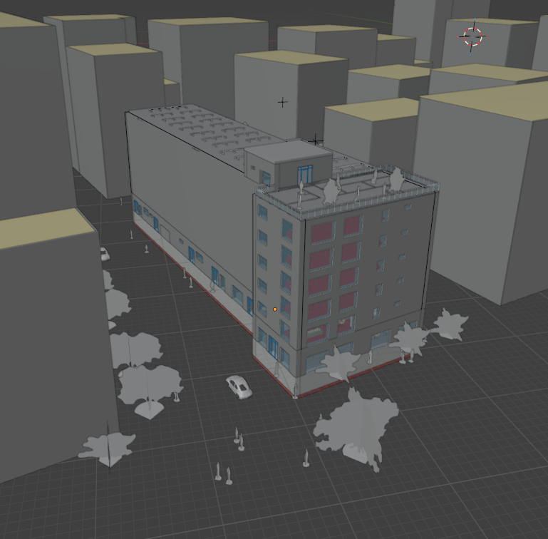

INDEPENDENT RESEARCH PROJECT · FEB – JUN 2026
AEC Interpreter
From “this window” to a specific element in a building model.
Photos and field notes describe local conditions. A building model contains structured records. I built a research prototype to connect the two, then investigated where that connection breaks down.
Repeated geometry makes visual identity ambiguous.
Structured perception + BIM-derived graph retrieval.
Research prototype evaluated with synthetic data.
01 / THE PROBLEM
A correct description can still identify the wrong window.
Many elements share the same appearance: a row of windows, repeated doors, similar walls. Recognizing the object class is only the start. The system must connect the observation to one record in the building information model (BIM).
My architecture background pointed toward spatial context: which floor, which wall, which position in a sequence? I used the model’s structure to make those relationships queryable.

02 / WHAT I BUILT
An inspectable path from evidence to candidates.
- 01
Read the evidence
A vision-language model reads photos, notes, and floorplan inputs.
- 02
Structure the output
Typed attributes express element class and spatial constraints.
- 03
Retrieve & rank
Deterministic graph queries retrieve model elements; spatial features help order candidates.
- 04
Inspect or defer
A Three.js interface highlights candidates and exposes answer/defer outcomes.
Simplified flow of this independent project. Querying valid model IDs does not guarantee a correct match.
Data and model adaptation
Built a synthetic training pipeline from BIM geometry using IfcOpenShell and Blender, then fine-tuned Qwen2.5-VL with LoRA for structured multimodal extraction.
Retrieval and inspection
Connected model inference, Neo4j/Cypher retrieval, and a Three.js inspection interface through a FastAPI research service. Compiled spatial constraints into deterministic query templates.
03 / ENGINEERING JUDGMENT
Separate the failure modes before adding complexity.
Distinguish retrieval from ranking.
The correct element could already be in the candidate set while the first-ranked result remained wrong. I evaluated extraction, candidate recall, and ranking separately to locate the problem.
Use spatial structure to distinguish similar objects.
I implemented position-based features for windows and doors. Their position within a building-model sequence provides information that an object-class label alone cannot.
Keep uncertain evidence available for review.
Soft ranking uses uncertain spatial evidence to order candidates. Answer/defer behavior makes uncertainty visible instead of presenting every top result as a confident answer.
04 / EVIDENCE & LIMITS
A working prototype with a defined evaluation boundary.
What the work demonstrates
- An integrated multimodal extraction and graph-retrieval workflow.
- Stage-level diagnosis that informed spatial-feature development.
- Candidate inspection and explicit deferral for uncertain results.
What remains unresolved
- Synthetic evaluation does not establish performance on real construction-site photos.
- Oracle experiments and realized results answer different questions.
- Window/door results do not establish equivalent performance for walls or every element class.
The key lesson: model-valid output and correct grounding are different requirements. The retrieval contract addresses the first; extraction quality, ranking, and evaluation determine the second.